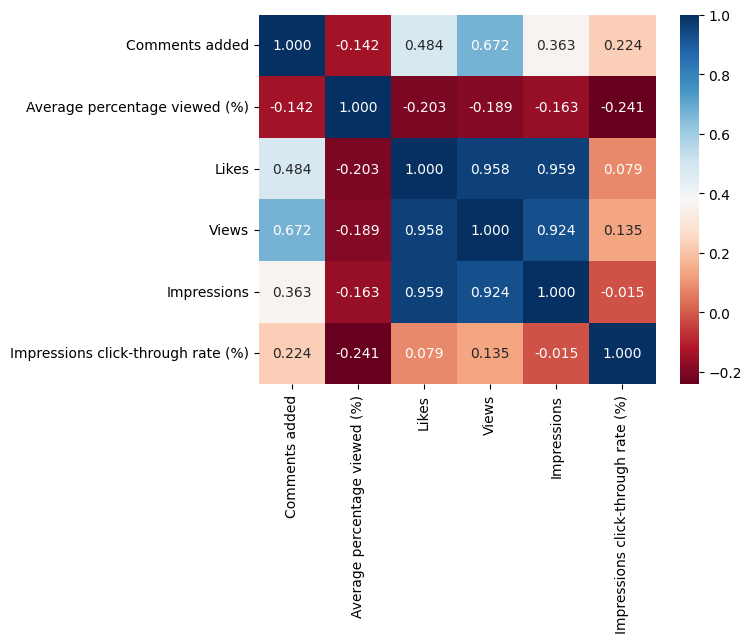
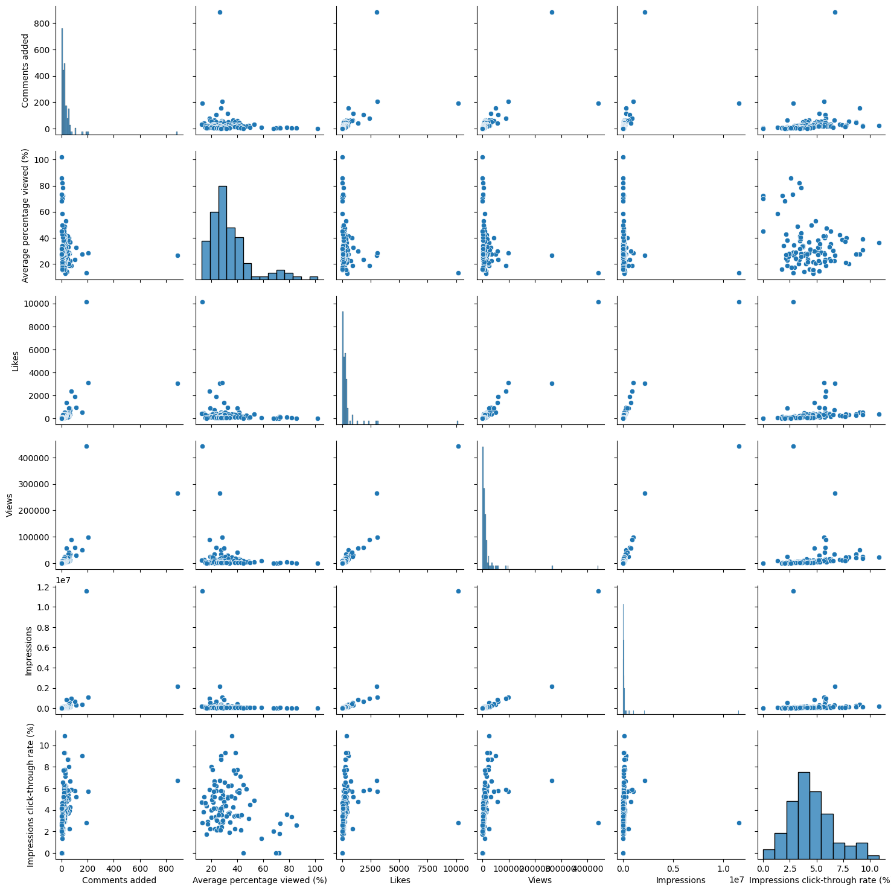
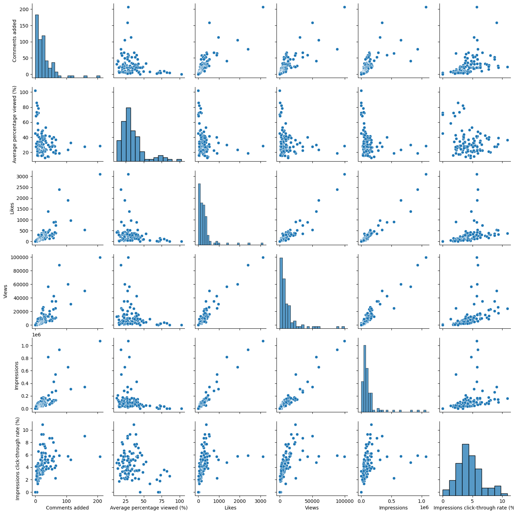
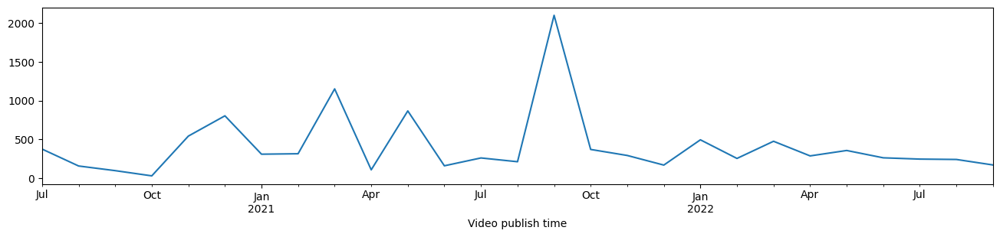

#imports
import pandas as pd
import matplotlib.pyplot as plt
import seaborn as sns
import plotly.express as pxPandas Cheat Sheet
ML
Some introduction to Pandas functionality and plotting to understand data
Pandas cheat sheet
In this blog, I go through some of the basics of pandas
Importing and using some basic functions of pandas
#reading an already existing csv file in a dataframe
raw = pd.read_csv("https://pythonandvba.com/youtube-data.csv")#printing the first 5 rows
raw.head(5)| Content | Video title | Video publish time | Comments added | Average percentage viewed (%) | Likes | Views | Impressions | Impressions click-through rate (%) | |
|---|---|---|---|---|---|---|---|---|---|
| 0 | Wn9L1MD_y0Y | How To Send WhatsApp Messages From Excel Using... | 19-Dec-20 | 885 | 26.36 | 3057 | 265002 | 2152704 | 6.71 |
| 1 | svcv8uub0D0 | How to Create an Excel Data Entry Form in 10 M... | 22-May-21 | 207 | 28.48 | 3112 | 99259 | 1069755 | 5.70 |
| 2 | Sb0A9i6d320 | Turn An Excel Sheet Into An Interactive Dashbo... | 11-Sep-21 | 192 | 13.14 | 10175 | 442044 | 11550064 | 2.79 |
| 3 | VwzaNjpcEZ0 | Send BULK SMS From Your OWN Number Using EXCEL... | 10-Jul-21 | 158 | 27.57 | 537 | 50270 | 341500 | 9.04 |
| 4 | nJHrSvYxzjE | Deploy Your Streamlit Web App on Heroku For Fr... | 20-Mar-21 | 114 | 32.44 | 966 | 30941 | 308074 | 5.22 |
#printing the information
raw.info()<class 'pandas.core.frame.DataFrame'>
RangeIndex: 107 entries, 0 to 106
Data columns (total 9 columns):
# Column Non-Null Count Dtype
--- ------ -------------- -----
0 Content 107 non-null object
1 Video title 107 non-null object
2 Video publish time 102 non-null object
3 Comments added 107 non-null int64
4 Average percentage viewed (%) 107 non-null float64
5 Likes 107 non-null int64
6 Views 107 non-null int64
7 Impressions 107 non-null int64
8 Impressions click-through rate (%) 106 non-null float64
dtypes: float64(2), int64(4), object(3)
memory usage: 7.6+ KB#checking for missing values
raw.isna().sum()Content 0
Video title 0
Video publish time 5
Comments added 0
Average percentage viewed (%) 0
Likes 0
Views 0
Impressions 0
Impressions click-through rate (%) 1
dtype: int64#gives the columns with missing values
raw[raw.isnull().any(axis="columns")]| Content | Video title | Video publish time | Comments added | Average percentage viewed (%) | Likes | Views | Impressions | Impressions click-through rate (%) | |
|---|---|---|---|---|---|---|---|---|---|
| 94 | 8E4se9Ah5o8 | MyToolBelt Installation | NaN | 5 | 72.18 | 22 | 1309 | 13 | 0.00 |
| 96 | V3Csrk--laM | Create Invoice Filepath | NaN | 5 | 70.11 | 1 | 16 | 5 | 0.00 |
| 100 | RnTqlKzQhRY | PySimpleGUI Retrieve Data | NaN | 4 | 85.97 | 6 | 182 | 78 | 2.56 |
| 105 | l4Dd1xLfNVY | xlwings - demo | NaN | 0 | 102.23 | 0 | 3 | 0 | NaN |
| 106 | pqIjey6Cbhw | How to resolve "pytube.exceptions.RegexMatchEr... | NaN | 0 | 44.91 | 0 | 13 | 3 | 0.00 |
#finding the top 3 rows with most values in a particular column
raw.nlargest(3, columns=["Impressions"])| Content | Video title | Video publish time | Comments added | Average percentage viewed (%) | Likes | Views | Impressions | Impressions click-through rate (%) | |
|---|---|---|---|---|---|---|---|---|---|
| 2 | Sb0A9i6d320 | Turn An Excel Sheet Into An Interactive Dashbo... | 11-Sep-21 | 192 | 13.14 | 10175 | 442044 | 11550064 | 2.79 |
| 0 | Wn9L1MD_y0Y | How To Send WhatsApp Messages From Excel Using... | 19-Dec-20 | 885 | 26.36 | 3057 | 265002 | 2152704 | 6.71 |
| 1 | svcv8uub0D0 | How to Create an Excel Data Entry Form in 10 M... | 22-May-21 | 207 | 28.48 | 3112 | 99259 | 1069755 | 5.70 |
Finding correlation between columns and plotting it in more readable way
raw.corr()FutureWarning: The default value of numeric_only in DataFrame.corr is deprecated. In a future version, it will default to False. Select only valid columns or specify the value of numeric_only to silence this warning.
raw.corr()| Comments added | Average percentage viewed (%) | Likes | Views | Impressions | Impressions click-through rate (%) | |
|---|---|---|---|---|---|---|
| Comments added | 1.000000 | -0.141652 | 0.484353 | 0.672014 | 0.362981 | 0.224351 |
| Average percentage viewed (%) | -0.141652 | 1.000000 | -0.202818 | -0.189377 | -0.163310 | -0.241190 |
| Likes | 0.484353 | -0.202818 | 1.000000 | 0.958418 | 0.958740 | 0.079380 |
| Views | 0.672014 | -0.189377 | 0.958418 | 1.000000 | 0.923668 | 0.134627 |
| Impressions | 0.362981 | -0.163310 | 0.958740 | 0.923668 | 1.000000 | -0.015123 |
| Impressions click-through rate (%) | 0.224351 | -0.241190 | 0.079380 | 0.134627 | -0.015123 | 1.000000 |
raw.corr().style.background_gradient(cmap='RdBu',vmin=-1,vmax=1)FutureWarning: The default value of numeric_only in DataFrame.corr is deprecated. In a future version, it will default to False. Select only valid columns or specify the value of numeric_only to silence this warning.
raw.corr().style.background_gradient(cmap='RdBu',vmin=-1,vmax=1)| Comments added | Average percentage viewed (%) | Likes | Views | Impressions | Impressions click-through rate (%) | |
|---|---|---|---|---|---|---|
| Comments added | 1.000000 | -0.141652 | 0.484353 | 0.672014 | 0.362981 | 0.224351 |
| Average percentage viewed (%) | -0.141652 | 1.000000 | -0.202818 | -0.189377 | -0.163310 | -0.241190 |
| Likes | 0.484353 | -0.202818 | 1.000000 | 0.958418 | 0.958740 | 0.079380 |
| Views | 0.672014 | -0.189377 | 0.958418 | 1.000000 | 0.923668 | 0.134627 |
| Impressions | 0.362981 | -0.163310 | 0.958740 | 0.923668 | 1.000000 | -0.015123 |
| Impressions click-through rate (%) | 0.224351 | -0.241190 | 0.079380 | 0.134627 | -0.015123 | 1.000000 |
heatmap=sns.heatmap(raw.corr(),cmap="RdBu",annot=True, fmt=".3f")FutureWarning: The default value of numeric_only in DataFrame.corr is deprecated. In a future version, it will default to False. Select only valid columns or specify the value of numeric_only to silence this warning.
heatmap=sns.heatmap(raw.corr(),cmap="RdBu",annot=True, fmt=".3f")
Plotting pairwise distributions
sns.pairplot(raw)
# removing outliers for better visualization
sns.pairplot(raw[raw["Views"]<raw["Views"].quantile(0.99)])
Visualizing time series data
#converting the date column from object to datetime
raw["Video publish time"]=pd.to_datetime(raw["Video publish time"])
raw.info()<class 'pandas.core.frame.DataFrame'>
RangeIndex: 107 entries, 0 to 106
Data columns (total 9 columns):
# Column Non-Null Count Dtype
--- ------ -------------- -----
0 Content 107 non-null object
1 Video title 107 non-null object
2 Video publish time 102 non-null datetime64[ns]
3 Comments added 107 non-null int64
4 Average percentage viewed (%) 107 non-null float64
5 Likes 107 non-null int64
6 Views 107 non-null int64
7 Impressions 107 non-null int64
8 Impressions click-through rate (%) 106 non-null float64
dtypes: datetime64[ns](1), float64(2), int64(4), object(2)
memory usage: 7.6+ KB# Sorting according to the date
raw.sort_values(by="Video publish time",inplace=True)#plot the likes with time
(raw
.set_index("Video publish time")
.sort_index()
.Likes
.resample("m")
.mean()
.fillna(0)
.plot(figsize=(16,3))
)<Axes: xlabel='Video publish time'>
We can plot a more interactive time series plot using plotly
def plot_timeseries(df, columns):
df = df.set_index("Video publish time").sort_index()
fig = px.line(
df,
x=df.index,
y=columns,
template="simple_white",
hover_name="Video title",
title=f"Development: {', '.join(columns).title()}",
)
fig.update_layout(hovermode="x unified", margin=dict(l=0, r=0, t=50, b=5))
return fig
fig = plot_timeseries(df=raw, columns=["Likes","Comments added"])
fig.show()I have used the following as reference for trying out these functionalities: https://www.youtube.com/watch?v=RXEP1R_ZNrs